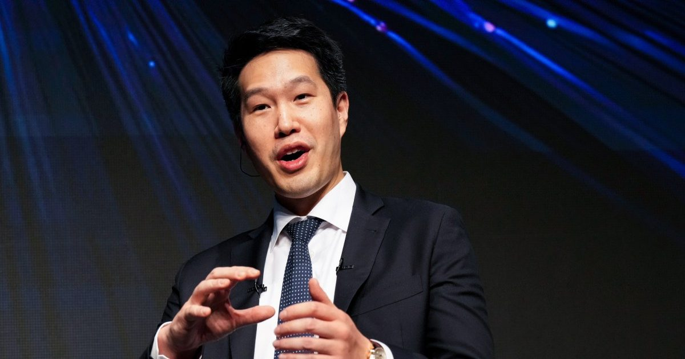

Загрузка: главный научный сотрудник OpenAI объясняет свой хакерский ответ
Это сегодняшнее издание The Download, нашего ежедневного информационного бюллетеня, в котором представлена ежедневная доза того, что происходит в мире технологий.
«Мы не собираемся стрелять себе в ногу» из-за последствий взлома, говорит главный научный сотрудник OpenAI Через два месяца после того, как агенты OpenAI взломали компьютеры компании Hugging Face,...